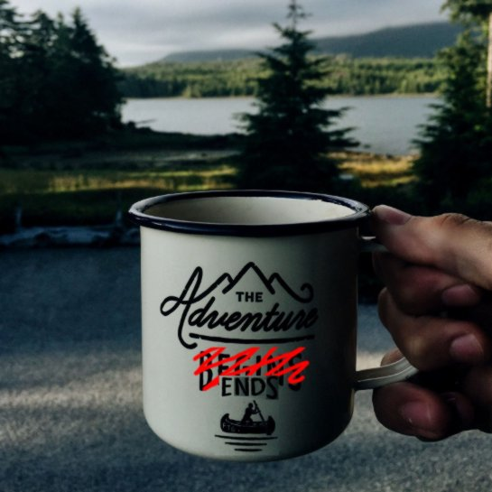
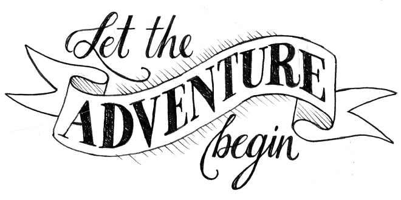

The ALASKA competition is now over. We would like to thank all of the users that made this adventure such a great experience. While we are finishing the paper that will summarize the major results of the competition, we would like to share some of the salient findings of our analysis of the submissions.
Most competitors failed to get across the Teklanika River and sunk. The only team to survive this long journey is ABBA, from Binghamton University. Armed with a novel and powerful attack, they were able to face the hardships inherent to a life in the wild and get to the top of the podium.
Unsurprisingly, deep learning has been the weapon of choice for most participants and was used by every member of the Hall of Fame.
However, despite some impressive results overall, our analysis of the performance of classifiers on the different types of diversity offered by the competition indicates that much of the work towards robust steganalysis remains to be done.
Finally, without any further ado, let us reveal to you the "ALASKA survivors Hall of Fame" :
| Users / teams | PMD5 (website) | PMD5 (real) | Pemin | FP50 |
|---|---|---|---|---|
| Binghamton University | 24.37 | 25.20 | 14.48 | 0.71 |
| Shenzhen University | 50 | 51.60 | 25.20 | 5.86 |
| 3188960009 | 54.93 | 53.8 | 26.33 | 7.67 |
| 375790798 / veyron_gz | 53.35 | 54.2 | 25.78 | 7.67 |
Those were the only competitors to cross the bound of PMD005 at 55% ; we have kept those competitors because, interestingly, the team ranked third was actually ranked 5th on the website with scores computed over subset of images.
The ALASKA steganalysis challenge is now over ; we wish to thank you all for your participation. We look forward to seeing you in July in Paris and ... perhaps for the next steganalysis challenge.
(written on: March, 29th, 2019)
Right at their entrance into the game, Binghamton team (yyousfi1) slammed a 43.8% on Nov. 10th which they turn to 37.5% 10 days later. Since then, no other team went below 52 %, leaving an enormous margin of almost 15% between their top followers and a "first shot". The question we will soon answer now is the following: are some teams "bluffing" ; it is indeed completely possible to play "offline", to work to improve the performance of a steganalysis method while not submitting any answer. The goal of such strategy would be to look at what is going on and either to create an "effet de surprise" or to play only if it is worth it. With two weeks remaining, we will soon have a pretty clear answer to this question.
Let's us just wait and see what will happen as we approach the home stretch. A final word to remind the competitor with the best scores that they can submit their paper to the ACM & IH&MMSec conference (see the call for paper here
(written on: March, 1st, 2019)
It has been a while (almost 2 and a half month) since the last review on ALASKA challenge.
Why such a long time ? Because after Binghamton team, USA, slams a record on November 10th, beating up previous submissions by more than 10% missed detection rate (for 5% false alarm rate).
Indeed, "yyousfi1" increased it score by almost 6.5% by the end of November and then ... not many remarkable events happen. The followers hardly improved their scores.
Then by mid-January we have had incremental improvements by several users, especially "2016130231" who now is ranked third (right behind Binghamton teams) ahead by a non-negligible 2%.
The competition starts raging again to take the third place on the podium with the user "375790798" (currently ranked fourth) regularly improving its submissions ; By the mean time, a newcomer, user "3188960009" reached the fifth place with only 4 submissions and is now only 2.5% away from the podium. Another competitor "veyron_gz", who is striving to reach the top, is still in the game with 55% missed detection rate.
This show us that the "following" competitors did not get sick seeing the results from the dominating teams from Binghamton but instead get revolved recently ; will they manage to challenge the leaders ? Hard to tell from now. For sure the competition increases and it is very exciting to see who will be on the podium in a month and a half at the deadline ... clock is still ticking.
Stay tuned for updates about what comes out from the last efforts of the striving competitors.
(written on: January, 30th, 2019)
The ALASKA challenge has been started two months and a half ago and it has been one month since the last review.
Over this last month, there has been an important increase in the activity and an impressive improvement in best submission's results.
Indeed the "UPPER BOUND" has been broken on the 24th of October by user 2016130205 with about 64% missed detection (for 5% false alarm rate).
Then, the 60% missed detection barrier has been reached very quickly by user 1185205583 before making an impression jump by improving all previous scores by 5% reaching a missed rate of 55% on the 3rd of November.
This remained the best submission until the shattering entrance of the user yyousfi1 who slammed a submission with as low as 44% missed-detection rate.
The current ranking shows, among other, three groups of very tight competitors (scores given in % of missed detection for 5% false alarm rate):
(written on: November, 17th, 2018)
It has been a month and a week since the ALASKA challenge started and it is time for a first review of competitors' results.
After a sort of warm-up phase during which the results were below what we stated as a "lower bound", recent submission reached impressive results, getting closer and closer to the "upper bound".
One can also note that Chinese competitors are leading the challenge by far with three tight submissions around 30% of missed detection for 5% false alarm rate.
Interestingly, looking at those three best submissions the current leader (jishenzeng) and the current third (1185205583) provided very similar results ; their first 500 images, ranked as the most likely stego, overlap by over 90%. Looking at the current second competitor (2016130205) this overlap is below 50%.
The challenge also seems to be quite a success up to now with ; as of the writing of the blog entry, we have:
We are truly looking forward to seeing how long the "upper bound" will hold and if those recent breakthrough submissions stimulate the competition.
Eventually, note that we are currently preparing a "technical" paper to present how we assess the difficulty of the challenge and set those "upper" and "lower" bounds.
(written on: October, 14th, 2018)
Unfortunately, we have to postpone by a few days the beginning of the ALASKA contest.
The two main reasons that lead us to postpone the beginning of the challenge are the following:
However, we have some good news on the "plus sign". First to take into account the kickoff delay the challenge is extended by 15 days. We also have (eventually) uploaded the complete and final version of the RAW dataset (made of 50,000 images).
Second, we are currently preparing the jpeg version of the training set and we will provide, as per users request, stego images. So the training will be made of 50,000 cover and 50,000 stego images.
Eventually, as per other users request, we will provide uncompressed version of the jpeg images for those we might be interested in using the "wild dataset" for spatial domain steganalysis, forensics or any other research topics.
We sincerely apologize for the inconvenience this delay may cause and thank you in advance for your understanding.
(written on: September, 1st, 2018)
ALASKA has been taking some vacations over the past days, but it is now back for setting everything for the beginning of the competition by September the 1st.
The server has been restarted this morning for a quite important update.
An important update ? What's new for now ? check it out:
Note that another important update will be made by the end of the week because we are currently updating the RAW image dataset. We increase the dataset from 41,000 images to approximatively 47,000 almost reaching the targeted size of 50,000 highly diverse raw images.
We will keep you update with any other changes.
(written on: August, 19th, 2018)
With, a day or two, of delay on the initial schedule, we are proud to official announce that the ALASKA steganalysis contest is now open. We will use this page to keep you up with, for instance, information on the number of submission and the countries of the competitors. During the warm up phase (all along month of August 2018) we will also keep you up with advances on the creation of the dataset and possible patches that we have to make.
For any remark, question or help, feel free to contact us at: alaska@utt.fr.
We truly hope that you will have as much fun as possible during this ALASKA contest and that innovative steganalysis method for highly heterogeneous source of images will comes out. See you at IH&MMSec'19 in June in Paris.

(written on: August, 3rd, 2018)